Aplikacija se koristi na telefonu i na računaru, a izgleda isto — zato su slike sa telefona. Dugme „Otvori u aplikaciji ↗" otvara pomenutu stranicu u novom prozoru (ako niste prijavljeni, prvo se prijavite).
1. Prvo podešavanje salonaRadi se jednom, redom kako je napisano. Posle se menja samo ono što se promeni.
Prijavite se kao vlasnik
- 1 Upišite svoju email adresu.
- 2 Upišite lozinku.
- 3 Kliknite „Prijavi se".
Lozinku ste dobili od nas. Odmah je promenite: gore desno kliknite na krug sa inicijalima → Profil → Promeni lozinku.
Otvori u aplikaciji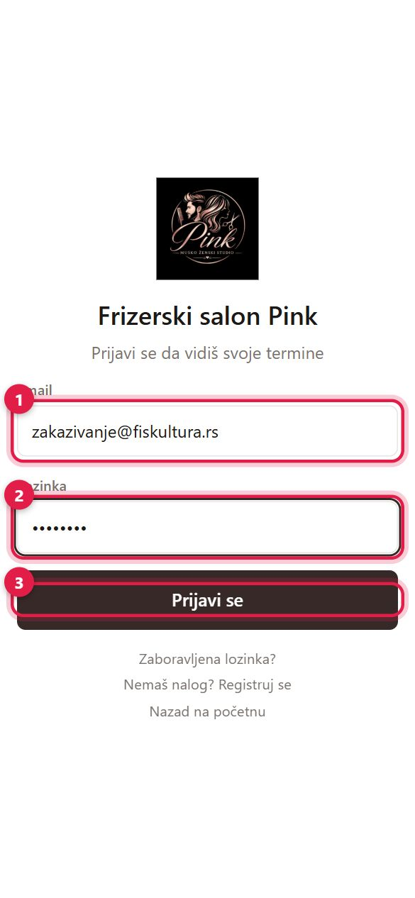
Upoznajte meni
- 1 Na telefonu meni otvarate dugmetom sa tri crtice gore levo. Na računaru je meni uvek vidljiv sa leve strane.
- 2 Na dnu menija su Podešavanja — tu počinje podešavanje salona.
Broj u žutom polju pored „Termini" pokazuje koliko termina čeka vašu potvrdu.
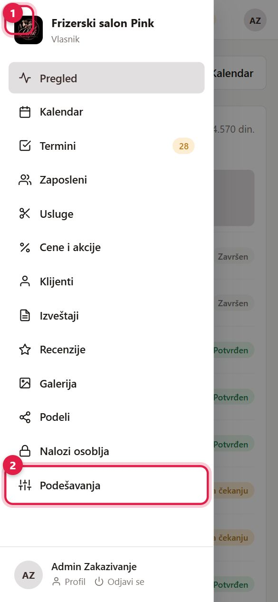
Upišite podatke o salonu
Meni → Podešavanja.
- 1 Otvorite karticu „Biznis".
- 2 Upišite naziv salona i izaberite delatnost.
- Na drugoj slici: adresa i grad 1, telefon 2 i vaš Instagram 3 (dovoljno je ime naloga, npr. @salonpink). Tu su i WhatsApp, email, Facebook i kratak opis salona koji vide klijenti.
- 3 Na kraju kliknite „Sačuvaj" (dugme je uvek na vrhu stranice).
Ako mapa na početnoj stranici pokazuje pogrešno mesto, u polje „Pretraga na mapi" upišite naziv salona tačno kako stoji na Google mapama.
Otvori u aplikaciji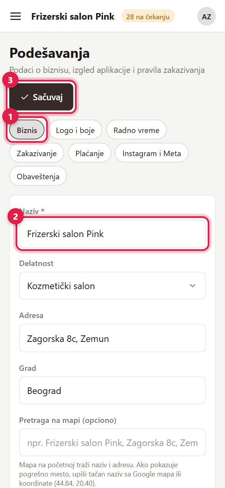
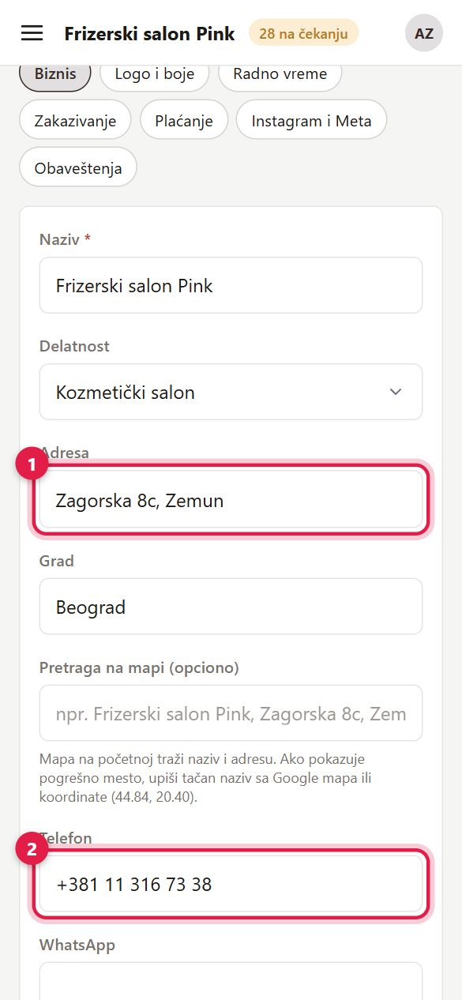
Logo, boje i naslovna fotografija
- 1 Kartica „Logo i boje".
- Dodajte logo — aplikacija iz njega sama predloži boje, pa sve stranice dobiju boje vašeg salona. Boje možete i ručno da promenite.
- 2 Naslovna fotografija: lepa fotografija salona koja stoji na vrhu početne stranice. Posle izbora pomerite i uvećajte sliku da se vidi deo koji želite.
- Kliknite „Sačuvaj".
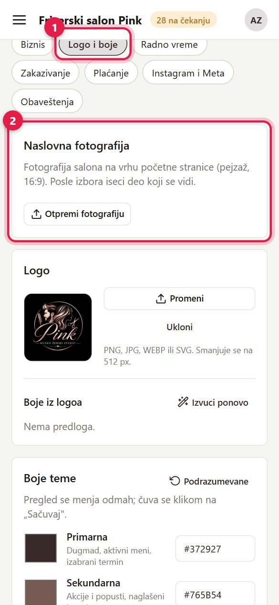
Radno vreme salona
- 1 Kartica „Radno vreme".
- Za svaki dan upišite od kada do kada salon radi. Dan kada ne radite ostavite isključen.
- Ispod su smene (npr. Pre podne 08–14, Popodne 14–20). One vam kasnije ubrzavaju upis radnog vremena zaposlenih — jednim klikom.
- Kliknite „Sačuvaj".
Zaposleni ne mogu da rade van radnog vremena salona. Ako skratite radno vreme salona, skraćuje se i njihovo.
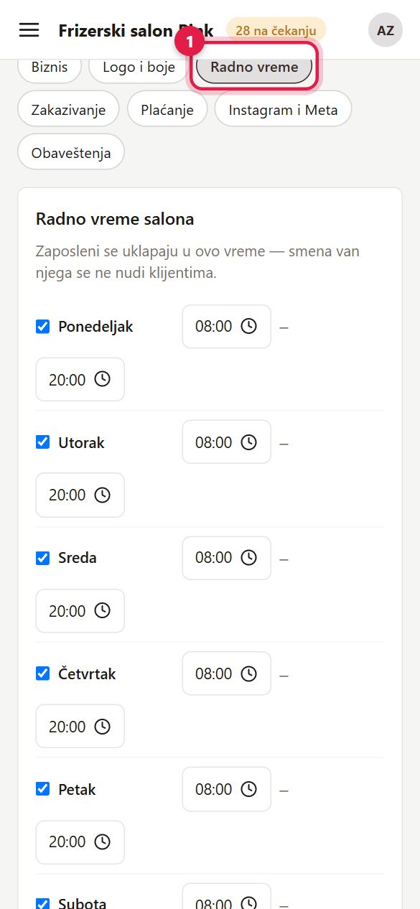
Upišite usluge i cene
Meni → Usluge.
- 1 Kliknite „+ Nova usluga".
- Na drugoj slici: naziv usluge 1 (npr. „Žensko šišanje"), koliko traje 2 i cena 3.
- Izaberite kategoriju (npr. Šišanje, Boja, Nega) — klijenti tako lakše nalaze uslugu.
- Ako je usluga samo za žene ili samo za muškarce, to izaberite; klijentu se onda nudi samo ono što je za njega.
- Kliknite „Sačuvaj" i ponovite za svaku uslugu.
Trajanje je važno: po njemu aplikacija računa slobodne termine. Upišite stvarno vreme koje vam je potrebno.
Otvori u aplikaciji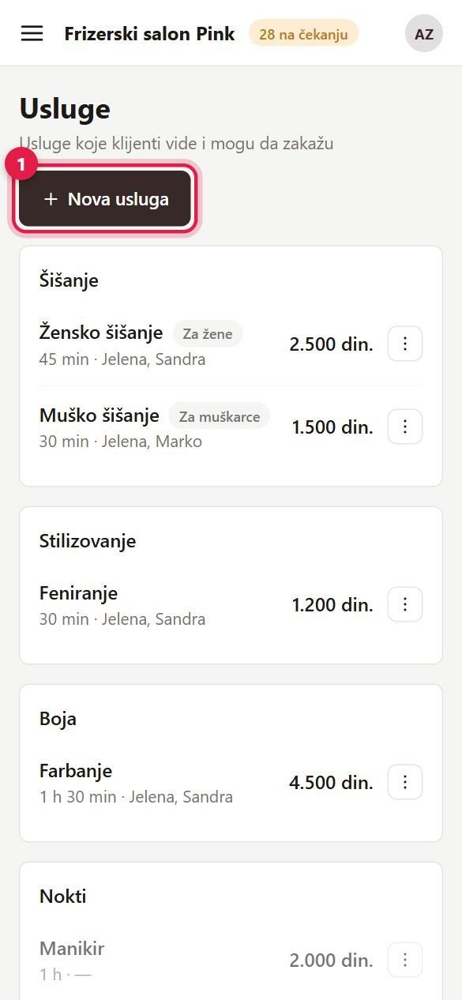
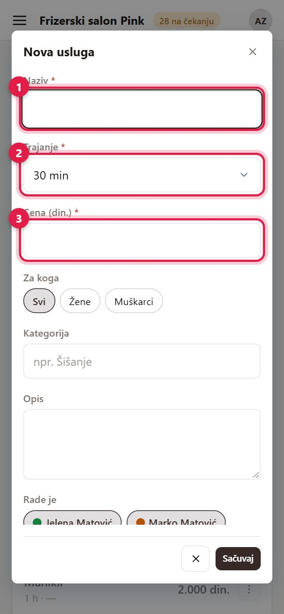
Upišite zaposlene
Meni → Zaposleni.
- 1 Kliknite „+ Novi zaposleni".
- Na drugoj slici: ime 1 i prezime 2.
- Upišite i email zaposlenog — on tada dobija svoj nalog i može da vodi svoj kalendar sa telefona.
- Potvrda termina: da li termini kod ovog zaposlenog odmah važe, ili čekaju da ih neko potvrdi.
- Boja: njegovi termini su tom bojom označeni u kalendaru.
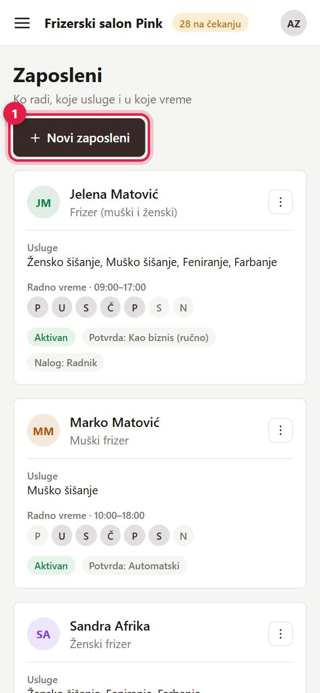
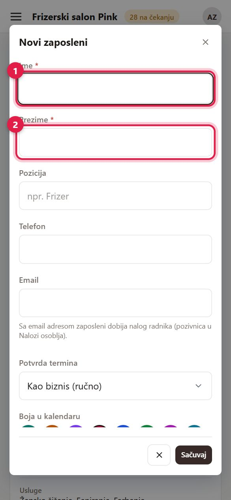
Dodelite ko koje usluge radi
U istom prozoru, malo niže:
- 1 Usluge koje radi — kliknite na svaku uslugu koju ovaj zaposleni radi (izabrane postanu tamne). Klijent će kod njega moći da zakaže samo te usluge.
- 2 Raspored: „Isto svake nedelje" ako radi uvek isto, ili „Smenski" ako se smene menjaju na 2, 3 ili 4 nedelje.
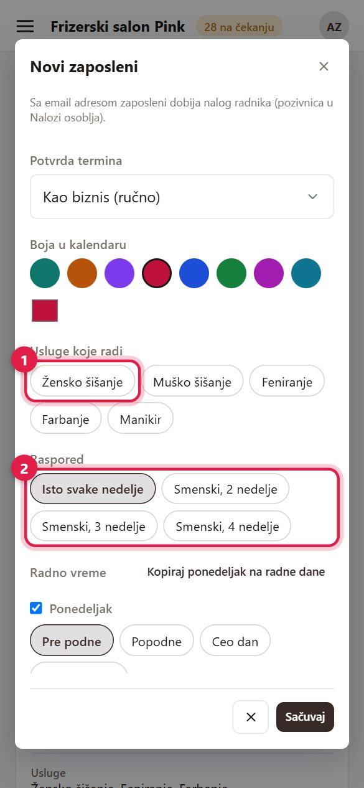
Radno vreme zaposlenog
- Uključite dane kada radi.
- 1 Kliknite smenu (Pre podne, Popodne, Ceo dan) — vreme se samo upiše.
- 2 Ili upišite vreme ručno. „+ smena" dodaje još jedan deo dana (npr. ako ima pauzu).
- 3 „Kopiraj ponedeljak na radne dane" — ponedeljak se prepiše na utorak–petak, da ne kucate isto pet puta.
- Kliknite „Sačuvaj".
Kad zaposleni privremeno ne radi (bolovanje, odmor, odlazak), ne brišite ga: u meniju „⋮" kod njegovog imena izaberite „Deaktiviraj". Njegovi termini i statistika ostaju sačuvani, a kasnije ga vraćate preko „Neaktivni".
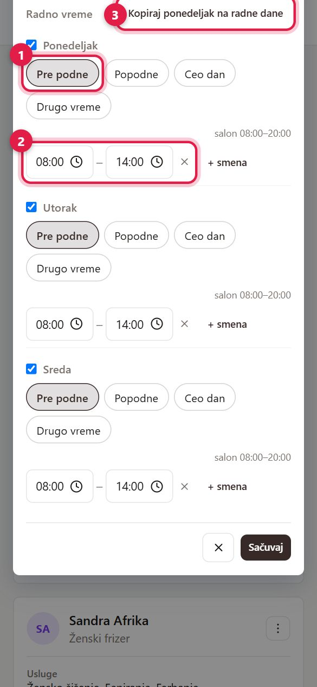
Nalozi osoblja (recepcija i drugi vlasnici)
Meni → Nalozi osoblja.
- Svaki zaposleni sa emailom ovde već ima nalog — ne morate ništa.
- 1 Za osobu koja ne šiša, a vodi kalendar (recepcija, administracija), kliknite „+ Novi nalog", upišite ime i email i izaberite ulogu Radnik. Ako je u pitanju suvlasnik, izaberite Vlasnik.
- Ta osoba dobija mejl sa linkom da postavi svoju lozinku.
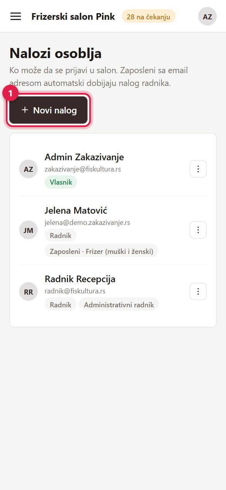
Pravila zakazivanja
Podešavanja → 1 kartica „Zakazivanje". Ovde odlučujete:
- Potvrda termina — „Ručno": svaki online termin čeka da ga vi ili radnik potvrdite. „Automatski": termin važi čim ga klijent zakaže.
- Koliko unapred klijent može da zakaže (npr. najranije sutra, najkasnije za 60 dana) i na koliko minuta se nude termini.
- Otkazivanje — do kada klijent sam može da otkaže (npr. najkasnije dan pre).
- Lista čekanja — kad je dan pun, klijent se prijavi i dobije poruku čim se neki termin oslobodi.
- Ocene posle posete — klijent dobija poziv da oceni uslugu.
- Disciplina klijenata — klijenti koji često otkazuju ili ne dođu dobijaju „kaznene poene". Žuta zona: termin im uvek čeka vašu potvrdu i nude im se samo manje traženi termini. Narandžasta: ne mogu sami da zakažu (vide da je sve popunjeno). Crvena: nalog je privremeno blokiran. Vi uvek možete da im zakažete termin.
Kliknite „Sačuvaj".
Otvori u aplikaciji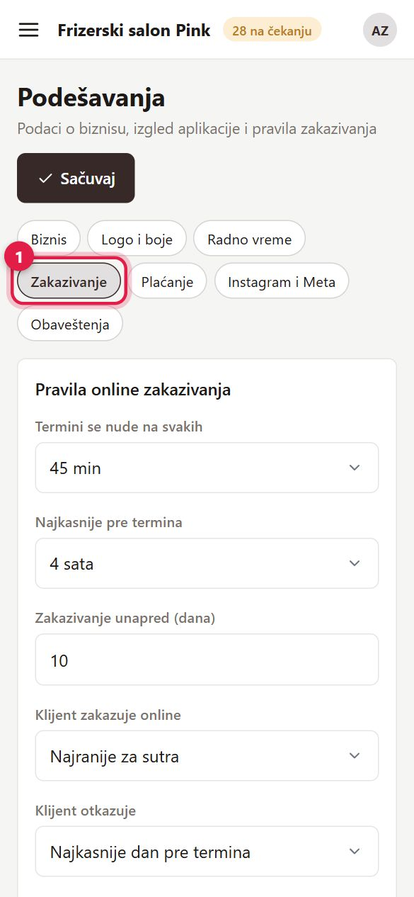
Obaveštenja i plaćanje
Obaveštenja (prva slika): izaberite koje poruke klijenti dobijaju — da je termin primljen, potvrđen, otkazan i podsetnik pre termina (npr. 24 sata ranije). Poruke idu mejlom, a po želji klijenta i preko WhatsApp-a. Tu možete uključiti i automatsko slanje izveštaja vama.
Plaćanje (druga slika): upišite tekući račun salona. Klijent tada u aplikaciji vidi uplatnicu i QR kod za plaćanje preko mobilnog bankarstva, a na kasi možete pokazati QR kod sa iznosom.
Otvori obaveštenja Otvori plaćanje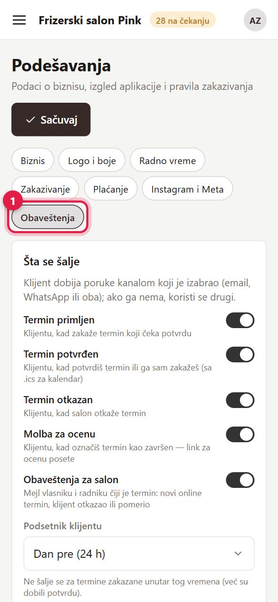
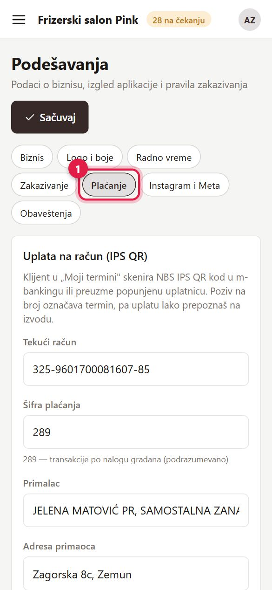
Akcije, popusti i galerija
Cene i akcije (prva slika) 1 „+ Nova akcija": popust u procentima ili dinarima, paket usluga, „treći dolazak gratis" i slično, za određeni period i dane. Cena sa popustom se klijentu sama izračuna.
Galerija (druga slika):
- 1 „Dodaj slike" — možete izabrati više slika odjednom ili slikati telefonom.
- 2 Zvezdica = slika je istaknuta na početnoj stranici (vaši najlepši radovi).
- U meniju „⋮" kod slike → „Opis, vrsta i usluga": vrsta „Salon" za fotografije enterijera — one idu u deo „Naš salon" na početnoj.
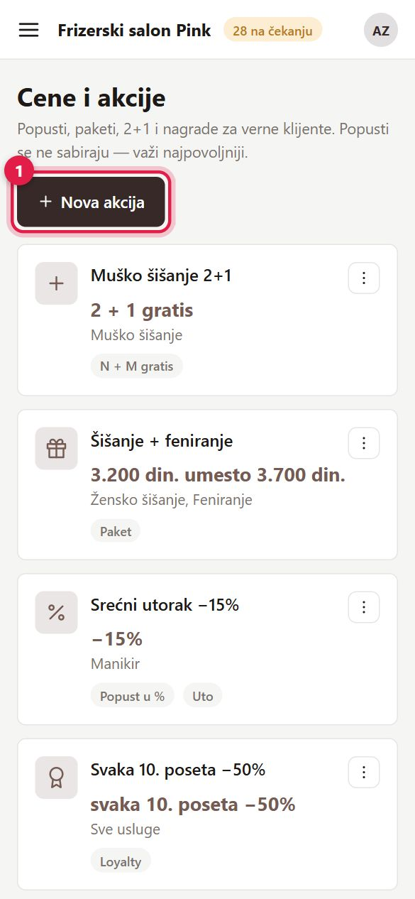
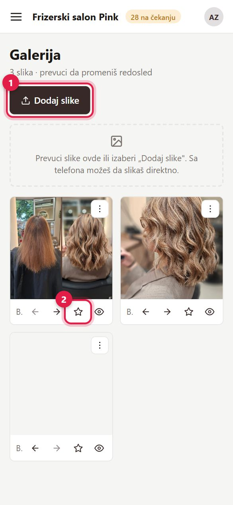
Instagram — da ljudi sa Instagrama zakazuju
Podešavanja → 1 „Instagram i Meta".
- Pročitajte preporuke na dnu: pređite na poslovni (Business) Instagram nalog — besplatno je i traje minut.
- 2 Kad imate poslovni nalog, kliknite „Poveži sa Instagramom" i prijavite se nalogom salona. Vaše objave se tada pojavljuju na početnoj stranici, a u Pregledu vidite koliko je ljudi videlo profil.
- Na drugoj slici 1 „Kopiraj" link i nalepite ga u Instagram: Uredi profil → Linkovi. Tako u Pregledu vidite koliko je ljudi došlo sa Instagrama i zakazalo.
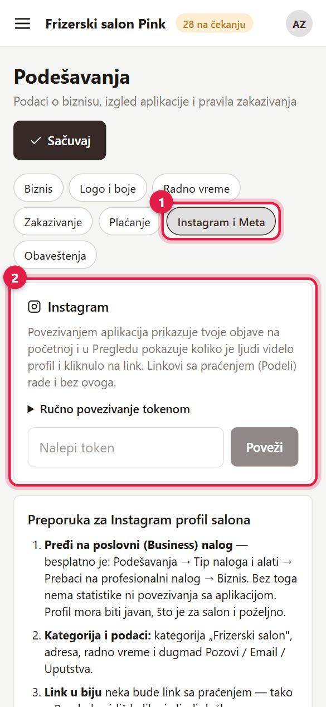
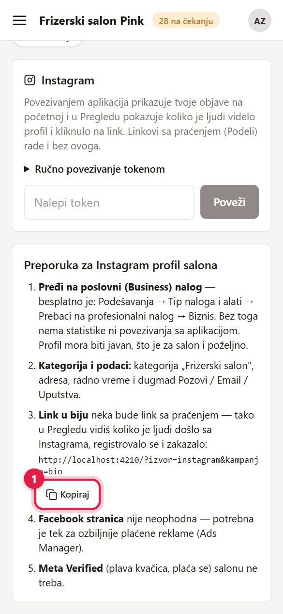
Podeli — slike za objave i linkovi za story
Meni → Podeli.
- 1 Slika za Instagram: izaberite šta prikazuje (zakaži online, akcija, cenovnik, slika iz galerije) i format (objava ili story). Dugme „Podeli" na telefonu šalje sliku pravo u Instagram, WhatsApp ili Viber.
- Druga slika — Linkovi za Instagram: izaberite gde stavljate link 2 (bio, story, objava, reklama), po želji dajte naziv (npr. „jesenja akcija") i 1 kopirajte link. U story ga ubacite nalepnicom „Link".
- Niže je QR kod za štampu — za izlog, recepciju i vizit karte.
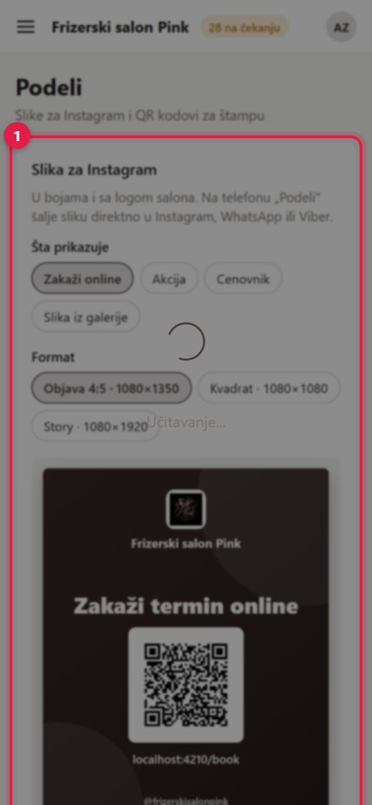
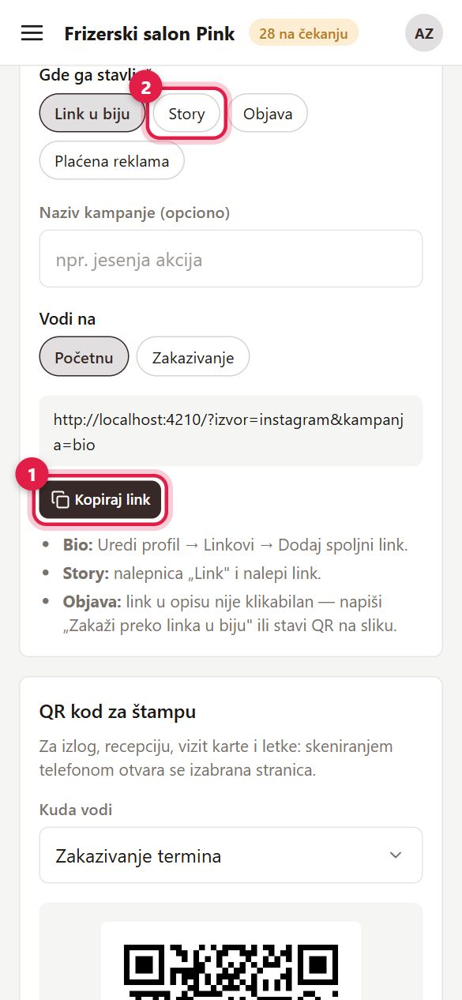
2. Svakodnevni radOvo rade i vlasnik i radnici.
Pregled — vaš dan na jednom mestu
Posle prijave otvara se Pregled: današnji termini, ko je sledeći klijent, termini koji čekaju potvrdu i ko danas radi.
- 1 „Svi današnji termini" otvara listu današnjih termina.
- Druga slika (samo vlasnik): statistika za 7, 30 ili 90 dana — zarada, broj termina, popunjenost, najtraženije usluge i odakle dolaze klijenti. 1 „Prikaži grafikone" uključuje grafikone; klik na stub dana otvara termine tog dana.
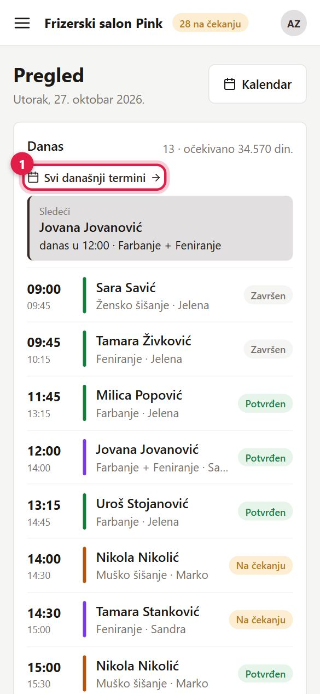
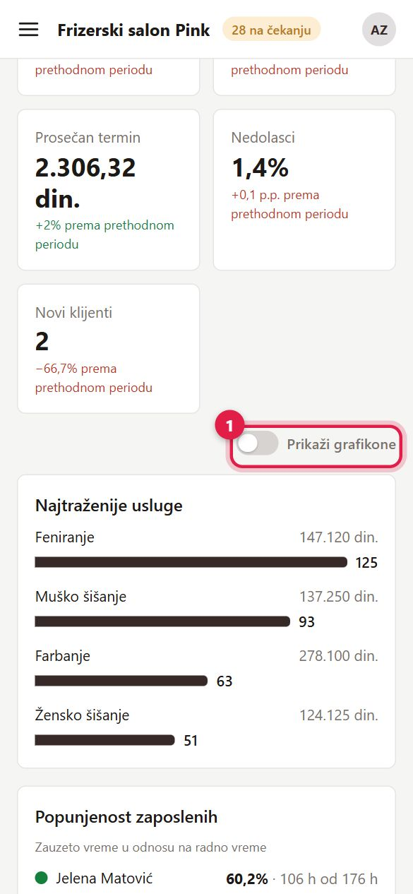
Kalendar i novi termin (npr. kad klijent pozove telefonom)
- 3 Izaberite prikaz: dan (kolona za svakog zaposlenog), nedelja ili mesec.
- 1 „+ Novi termin" — ili samo kliknite na prazno mesto u kalendaru.
- Druga slika: 1 počnite da kucate ime ili telefon klijenta i izaberite ga sa spiska. Ako ga nema, dodajte novog klijenta. Zatim izaberite uslugu, zaposlenog, dan i vreme i sačuvajte.
- 2 „Blokiraj vreme" — zatvorite vreme kada se ne zakazuje (pauza, lekar, kasniji dolazak).
- Termin pomerate tako što ga prevučete na novo vreme ili kod drugog zaposlenog.
Ako je klijent ranije često otkazivao ili nije dolazio, pri zakazivanju se pojavi upozorenje — termin i dalje možete da upišete.
Otvori u aplikaciji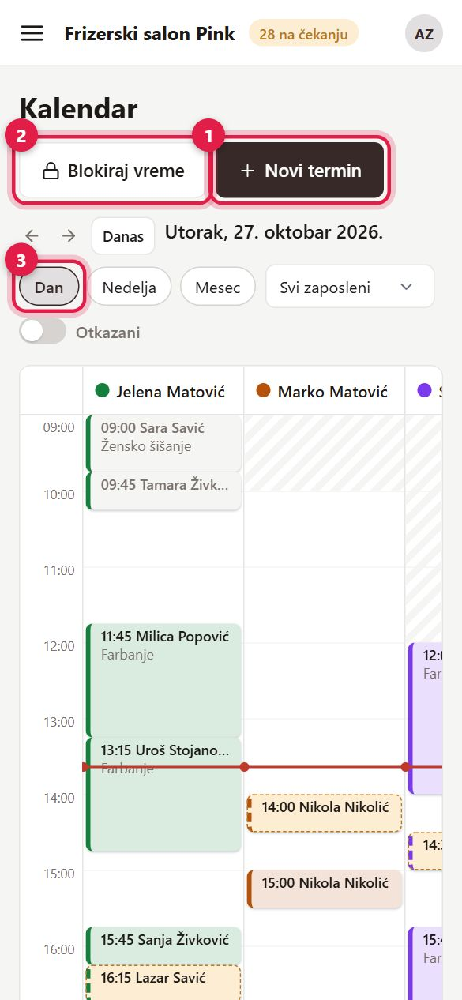
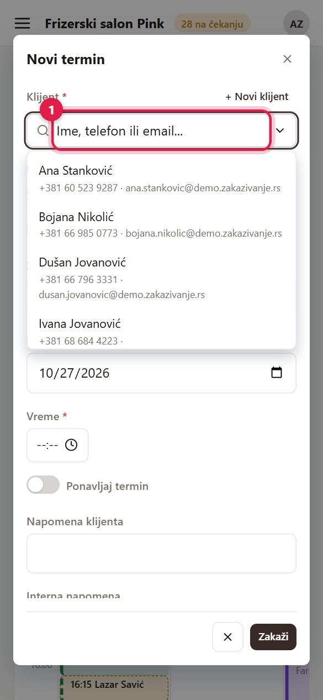
Potvrdite, završite ili otkažite termin
Meni → Termini (izaberite Danas, Sutra, 7 ili 30 dana).
- 1 „Potvrdi" — za termine koji čekaju potvrdu. Klijent odmah dobija poruku.
- 2 Meni „⋮" pored termina (druga slika):
- Završen — klijent je bio; termin ulazi u zaradu i klijent dobija poziv da oceni posetu.
- Nije došao — klijent nije došao (računa se u disciplinu).
- Otkaži — salon otkazuje; Klijent otkazao — klijent je javio da ne dolazi.
- Pozovi klijenta — poziv sa telefona.
- Kad kliknete na termin u kalendaru, otvaraju se detalji: tu beležite plaćanje (gotovina, kartica, račun) ili pokazujete QR kod za plaćanje.
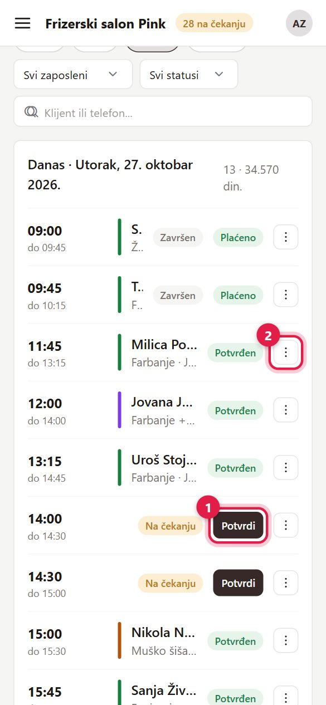
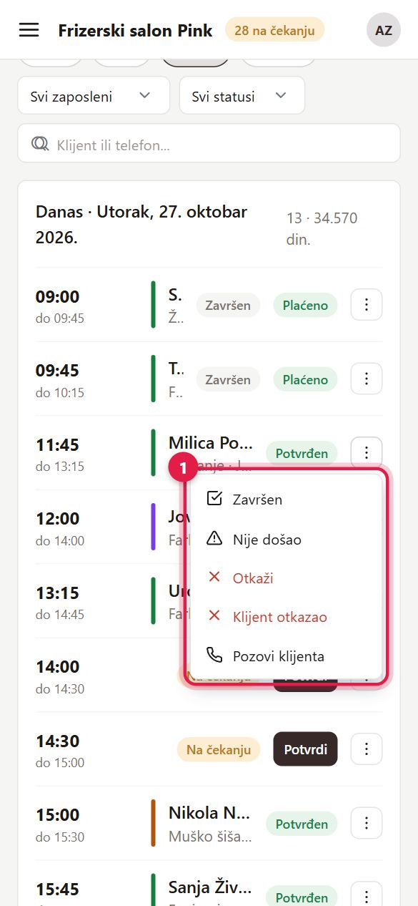
Klijenti
- 1 Pretraga po imenu ili telefonu.
- 2 „+ Novi klijent" — za klijente koji zovu telefonom. Kada se kasnije sam registruje istim emailom, dobija sve svoje termine.
- Meni „⋮" → „Istorijat i zona": svi dolasci, otkazivanja i nedolasci klijenta. Vlasnik tu može ručno da mu promeni zonu (npr. da ga odblokira).
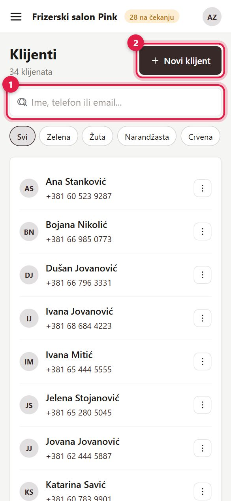
Izveštaji (dan, nedelja, mesec)
- 1 Izaberite zbirni izveštaj ili izveštaj za jednog zaposlenog i period: dan, nedelja ili mesec.
- 2 „Otvori PDF" — izveštaj za štampu ili čuvanje. Može i da se pošalje na mejl ili WhatsApp.
Zaposleni koji šiša vidi samo svoj izveštaj; vlasnik i recepcija vide sve.
Otvori u aplikaciji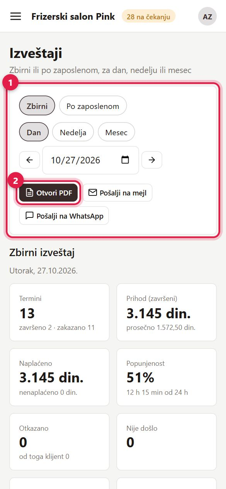
Recenzije (vlasnik)
Ovde stižu ocene klijenata posle završenih termina. Možete da odgovorite (odgovor se vidi javno) ili da sakrijete neprikladnu ocenu. Vidi se i prosečna ocena po zaposlenom.
Otvori u aplikaciji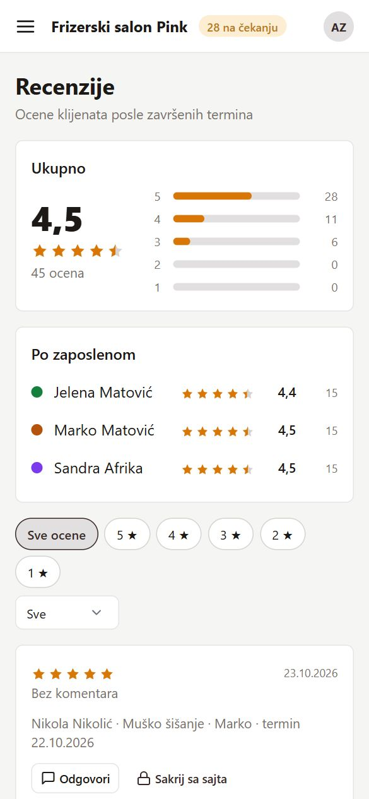
3. Šta vidi radnik
Meni radnika
1 Radnik vidi Pregled, Kalendar, Termini, Klijenti i Izveštaje — sve što je potrebno za svakodnevni rad (koraci 15–19). Ne vidi podešavanja, usluge i cene, galeriju ni statistiku salona i ne može da briše klijente.
Svoju lozinku i podatke menja u Profilu (dole u meniju).
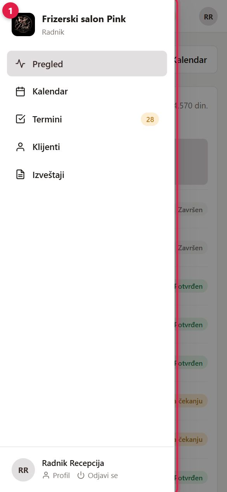
4. Klijent — kako se zakazujeOvaj deo možete poslati klijentima.
Otvorite stranicu salona
- Otvorite link salona (iz Instagrama, poruke ili QR koda).
- 1 Kliknite „Zakaži termin".
- Druga slika: ako nemate nalog, izaberite „Registruj se" 1. Možete i prvo da pogledate slobodne termine, a nalog napravite na kraju.
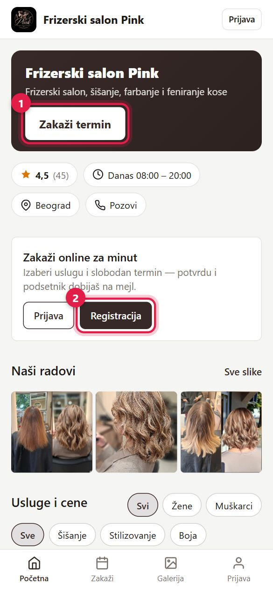
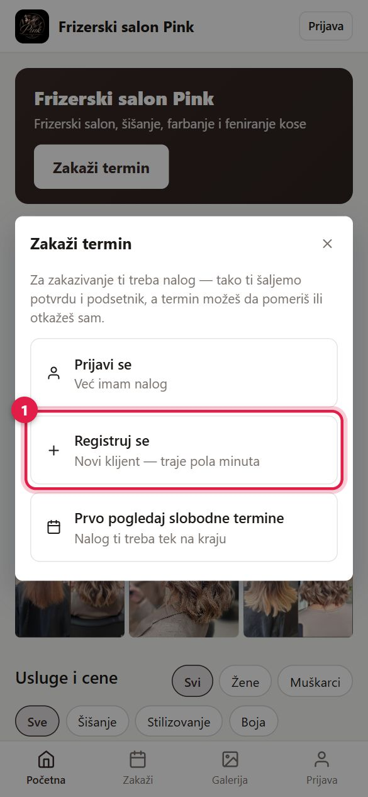
Napravite nalog
- 1 Upišite ime, prezime, email, broj telefona i lozinku.
- 2 Kliknite „Registruj se".
- Na email stiže poruka — kliknite link u njoj da potvrdite adresu.
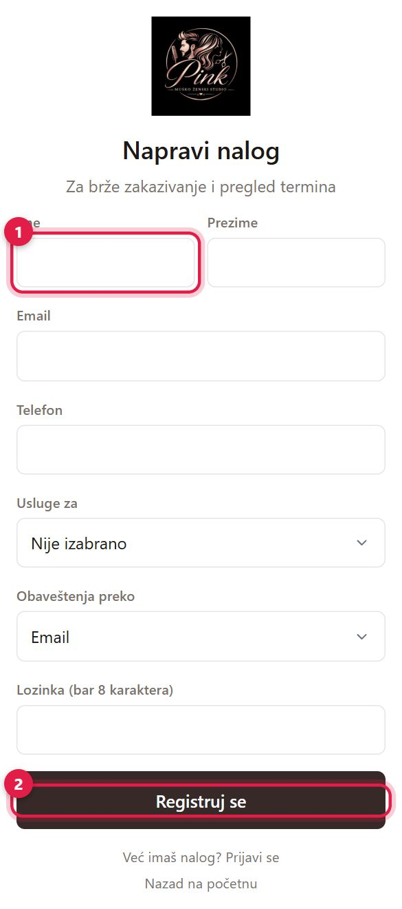
Izaberite uslugu i frizera
- 1 Kliknite uslugu (može i više njih, npr. farbanje i feniranje).
- 2 „Dalje".
- Druga slika: izaberite kod koga želite 1, ili „Bilo ko" za prvi slobodan termin. „Zapamti kao mog frizera" — sledeći put on je odmah izabran.
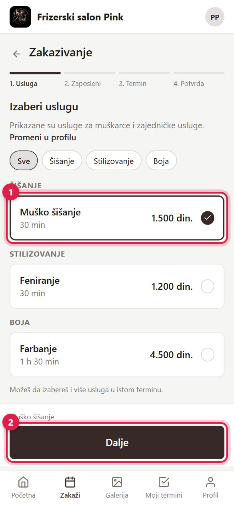
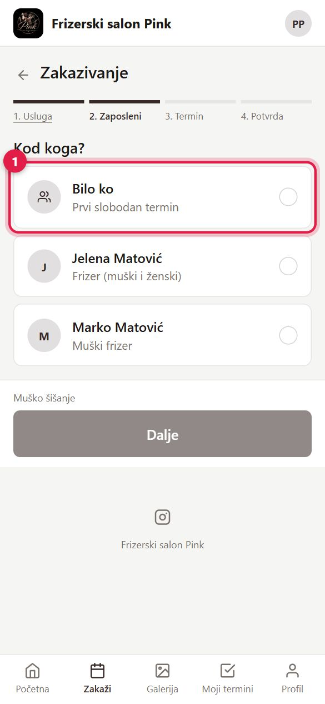
Izaberite dan i vreme
- 1 Kliknite dan. Strelicama idete na sledeće nedelje.
- 2 Kliknite slobodno vreme, pa „Dalje".
Ako je dan pun (isprekidan okvir), možete se prijaviti na listu čekanja — čim se termin oslobodi, stiže vam poruka.
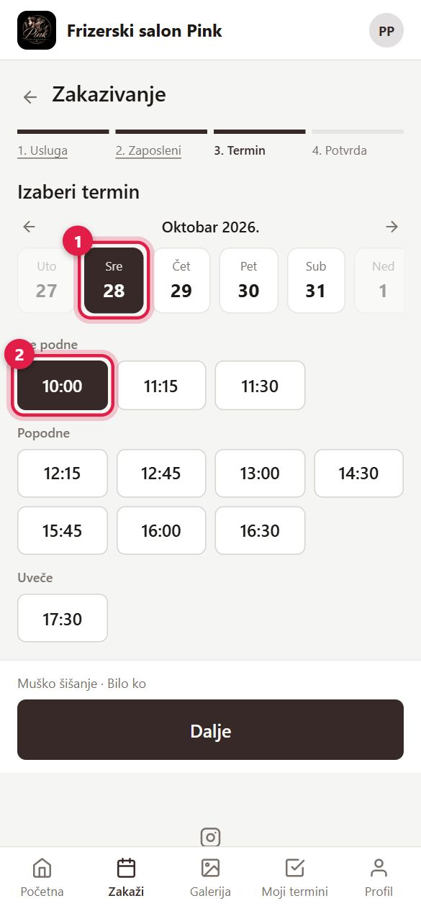
Potvrdite
- Proverite uslugu, frizera, vreme i cenu. Ako nešto treba promeniti, kliknite „Izmeni".
- 1 Kliknite „Zakaži termin".
- Na email stiže potvrda sa podsetnikom za vaš kalendar. Ako salon potvrđuje termine ručno, stiže vam još jedna poruka kad je termin potvrđen.
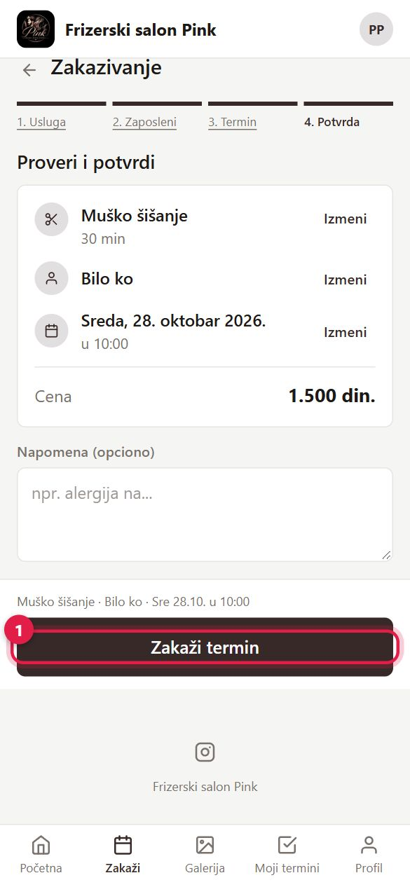
Moji termini — pomeranje, otkazivanje, plaćanje
- 1 „Promeni termin" — izaberete novo vreme, bez otkazivanja.
- 2 „Otkaži" — moguće do roka koji je salon odredio (npr. najkasnije dan pre).
- „Plati" (ako salon to nudi) — QR kod za mobilno bankarstvo ili uplatnica.
- Druga slika: 1 „Prošli i otkazani" — tu je dugme „Oceni posetu" posle završenog termina. 2 „Kalendar" prikazuje termine po mesecima.
Česta otkazivanja u poslednjem trenutku i nedolasci mogu ograničiti online zakazivanje — tada termin zakazujete pozivom salonu.
Otvori moje termine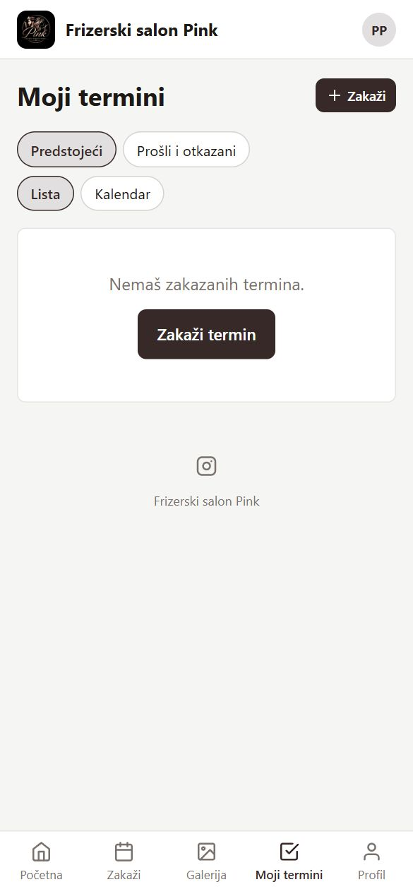
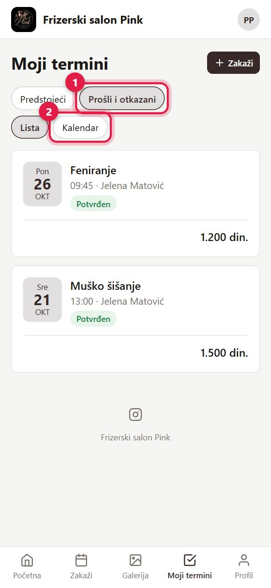
Profil
- 1 Omiljeni frizer — uvek ponuđen prvi.
- Obaveštenja preko — email ili WhatsApp; tu su i broj telefona, promena lozinke i odjava.
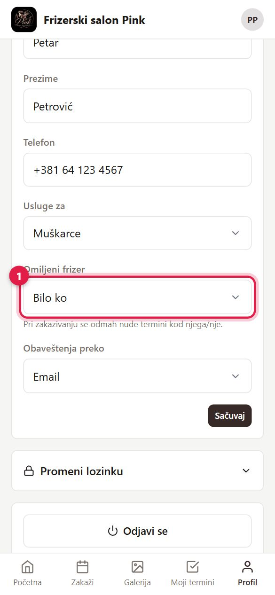
5. Česta pitanja
Klijent kaže da nije dobio mejl. Neka proveri folder „Promocije" ili „Neželjena pošta". Vlasnik u Podešavanja → Obaveštenja → Dnevnik slanja vidi da li je poruka poslata.
Klijent je zaboravio lozinku. Na stranici za prijavu neka klikne „Zaboravljena lozinka?" — stiže mu link za novu.
Zaposleni ide na odmor. U kalendaru kliknite „Blokiraj vreme" za te dane, ili ga u Zaposleni → „⋮" privremeno deaktivirajte.
Promenila se cena. Usluge → „⋮" → Izmeni. Već zakazani termini zadržavaju staru cenu.
Ne vidim neki deo menija. Radnici ne vide podešavanja, cene i galeriju — to radi vlasnik.